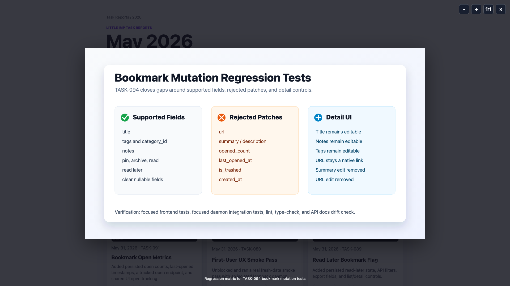
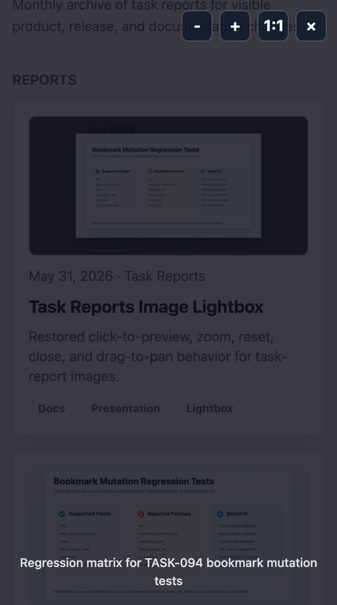

Grimoire Task Report
Task Reports Image Lightbox


Before
Task reports and month indexes rendered useful screenshots and diagrams, but images were only inline page content. Full-size inspection required opening the asset directly or zooming the browser page.
Problem
The task-report instructions require visual evidence to be easy to inspect. Without a shared image preview behavior, screenshot-heavy reports were harder to review at desktop and mobile sizes.
Changes Added
- Added a shared task-report lightbox helper at
docs/task-reports/assets/task-report-lightbox.js. - Loaded the helper on every existing task report page and the May report index that renders images.
- Added regression coverage that verifies every report image page loads the helper and that click, native-size zoom, drag, and close interactions work.
- Documented the lightbox and screenshot-resolution requirements in
docs/task-reports/INSTRUCTION.md.
Result
Report images can now be clicked for a focused preview with keyboard, wheel, zoom, actual-size, close, and drag-to-pan behavior. Month-index cards still link to their reports outside image clicks.
Verification
npm run test -- scripts/task-report-lightbox.test.tspassed.npm run lintexited 0 with the repo's existing Fast Refresh and hook warnings.node --check docs/task-reports/assets/task-report-lightbox.jspassed.git diff --checkpassed.- Browser check: month-index thumbnail image opened the lightbox without navigating away from the index.
- Browser check: individual report hero image opened, zoomed, and dragged in the lightbox.
- Visual check: desktop screenshot captured at
1920x1080and narrow screenshot captured at780x1400.
Links
Implementation Notes
The helper is intentionally static and dependency-free so generated reports remain portable. Images now keep their natural pixel dimensions internally, open fitted to the viewport, and use the 1:1 control for actual source size.